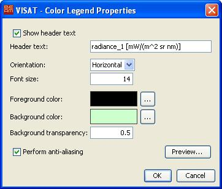
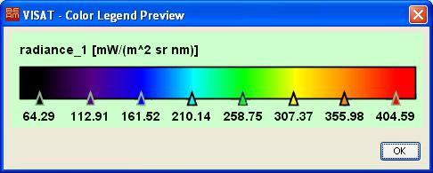

| Export Color Legend | |
For non-RGB images it is possible to export the current colour palette setting as a colour legend image. This function is available from the context menu over non-RGB images. The menu item Export Color Legend brings up a file chooser dialog allowing you to select the file name for the exported legend image. The legend appearance can be modified by opening the Properties... button in the file chooser:

Note that the tranparency mode is only enabled for the image types TIFF and PNG. A preview dialog for the legend image can be opened by clicking the Preview... button. Within the dialog it is also possible to copy the colour legend image the the system clipboard by using the context menu over the image area:
